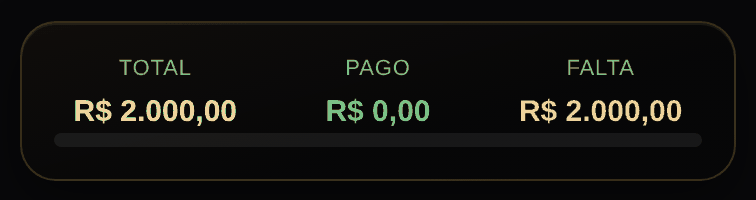
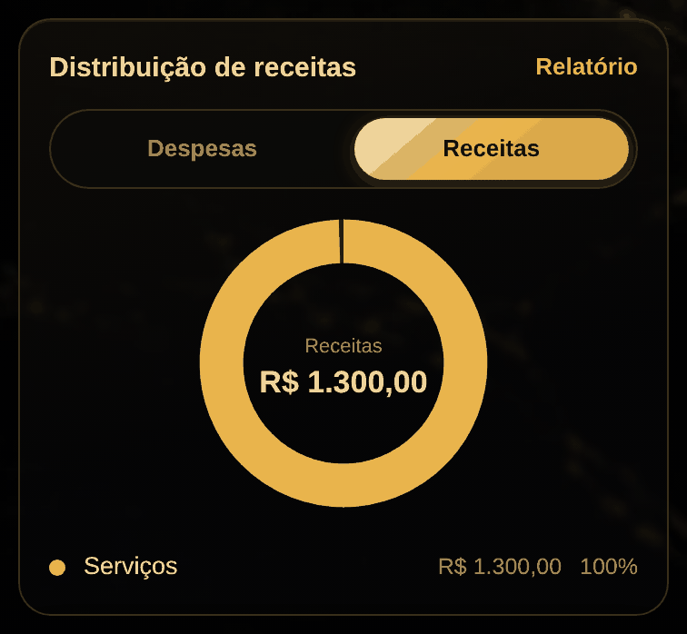
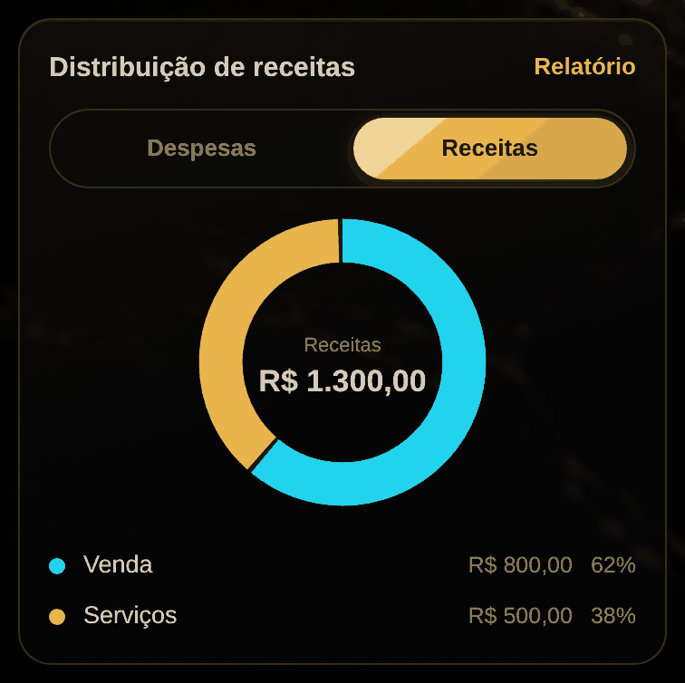

11 esperando a sua decisão · nada disso está no ar.
Proposta 0001
O aviso da fatura vira etiqueta, em vez de sumir no meio da linha
AntesDepois
Hoje o aviso de que um lançamento não entra no total de despesas é emendado
no subtítulo, depois da categoria e da conta. Numa tela de celular a linha
estoura e o aviso é cortado: fica "Outros · C6 Bank · não conta …", que é
justamente a parte que importa sendo escondida.
A proposta tira esse texto do subtítulo e põe embaixo, como etiqueta
discreta, do mesmo jeito que a etiqueta "cai hoje" da lista de clientes.
O que ela NÃO faz: não muda nenhuma conta. O valor, o total de despesas e a
regra de quando um lançamento conta continuam idênticos — é só onde o aviso
aparece.
Risco: baixo. Mexe em uma função de desenho (linhaLancamento) e acrescenta
uma classe de estilo. A suíte inteira passou, 47/47, sem ajuste em teste.
Arquivos: index.html (linhaLancamento e uma regra .etiqueta.fora).
Proposta 0002
A dívida de cartões só crescia: nada nunca abatia
AntesDepois
Cada compra no cartão somava na dívida, mas o pagamento da fatura nunca
descontava. É que o pagamento vem do extrato da conta corrente como saída
de lá — nunca como entrada no cartão. Resultado: a dívida acumulava todo
mês, para sempre.
No print, três meses de cartão com as duas primeiras faturas pagas em dia.
A linha do cartão mostra R$ 770,00 de fatura em aberto, que é o certo, e
logo embaixo o total dizia R$ 2.310,00 — a soma dos três meses. As duas
linhas do mesmo cartão se contradiziam na mesma tela.
O que a proposta faz: o pagamento de fatura e a transferência com destino
no cartão passam a abater a dívida. O abatimento nunca passa do que foi
devido, então a dívida não vira número negativo, e sem compra lançada não
há fatura para abater.
Isso também conserta o patrimônio líquido, que é património = contas +
investimentos − dívida de cartões. Ele estava sendo puxado para baixo pelo
mesmo valor errado.
O que ela NÃO faz: não mexe no saldo das contas, nem no total de despesas,
nem na análise. Só na conta da dívida.
Risco: baixo, mas é conta de dinheiro. A suíte inteira passou, 47/47, sem
ajuste em teste nenhum.
Arquivos: index.html (dividaDeCartoes).
Proposta 0003
O total do dia somava por um critério, o do período por outro
AntesDepois
Na mesma tela de Transações, o número do cabeçalho do dia incluía o
pagamento de fatura, e o total de "Saídas" do período não incluía. Os dois
estavam certos cada um no seu critério, mas juntos se contradiziam: quem
somasse os dias na mão nunca chegava ao total de baixo.
No print, um dia com a fatura de R$ 500,00 paga e um gasto de R$ 120,00. O
cabeçalho dizia −R$ 620,00; passa a dizer −R$ 120,00, que é o que aquele
dia custou de verdade — as compras que formaram a fatura já foram contadas
no mês em que aconteceram.
O que a proposta faz: o total do dia passa a usar a mesma régua do total de
"Saídas" do período.
O que ela NÃO faz: não some com a linha nem muda o valor dela. A fatura
continua listada, com os R$ 500,00, e com o aviso de que não conta como
despesa. (A proposta 0001 deixa esse aviso legível, hoje ele é cortado.)
Risco: baixo. Mexe só na soma do cabeçalho do dia.
Testes: a suíte deu vermelha na primeira rodada (t43, t50, t52, t53), mas
os quatro passaram sozinhos e as duas rodadas completas seguintes fecharam
47/47. Foi o vermelho falso conhecido de rodar doze em paralelo, não a
mudança. Registro porque aconteceu.
Arquivos: index.html (o cálculo de totalDia em Transações).
Proposta 0004
O teto por categoria estourava em silêncio, só na cor da barra
AntesDepois
O teto geral do mês já diz em reais quanto sobrou ou quanto passou. Por
categoria ficava só a barra: vermelha em 101% e vermelha em 300% são a
mesma barra cheia, e para saber o tamanho do estrago você tinha que
subtrair de cabeça, categoria por categoria.
O que a proposta faz: embaixo da barra aparece o número. "Passou R$ 150,00
do teto" quando estourou, "Faltam R$ 40,00 para o teto" quando passou de
80% e ainda dá tempo. Abaixo disso não escreve nada — categoria tranquila
não precisa de aviso, e encher a tela de texto seria pior.
O que ela NÃO faz: não muda nenhum cálculo, nem a ordem das categorias,
nem a cor das barras. Só põe em palavras o que a barra já mostrava.
Risco: baixo. Acrescenta uma linha de texto na tela Planejar, sem tocar em
conta nenhuma. A suíte inteira passou, 47/47.
Arquivos: index.html (o bloco "Por categoria" em desenharPlanejamento).
Proposta 0005
O relatório de IR não juntava os gastos de saúde e educação
AntesDepois
O relatório de apoio ao imposto de renda trazia a posição dos ativos em
31/12 e os rendimentos do ano, e parava aí. Saúde e educação, que são o que
quase todo mundo procura na hora de declarar, continuavam espalhados no
extrato do ano inteiro para você garimpar na mão.
O que a proposta faz: uma seção nova com todas as saídas do ano nessas duas
categorias — data, categoria, descrição e valor —, o total de cada uma e o
total das duas. É o trabalho chato de procurar, feito.
O que ela NÃO faz, e isto é de propósito: não chama nada de dedutível e não
calcula dedução nenhuma. O app não sabe o que entra na sua declaração, com
que limite ou com que comprovante — isso é regra da Receita e conversa com
quem faz a sua declaração. O relatório diz isso com todas as letras embaixo
da tabela. Preferi entregar a lista honesta a entregar uma conta que pode
te levar a errar com o Leão.
Também não mexe em cálculo nenhum do app: só lê lançamentos que já existem.
Risco: baixo. Acrescenta uma seção de leitura a um relatório. A suíte
inteira passou, 47/47.
Arquivos: index.html (o bloco tipo === 'ir' em abrirRelatorio).
Proposta 0006
A categoria estourada ficava onde a letra dela mandasse
AntesDepois
No Planejar, os tetos por categoria aparecem em ordem alfabética. Se a que
estourou começa com V, ela fica por último — quem abre a tela vê primeiro
as que estão bem e precisa descer para achar o problema.
No print, "Viagem" passou R$ 320,00 do teto e estava no rodapé, embaixo de
duas categorias tranquilas. Passa a ser a primeira.
O que a proposta faz: sobe o que estourou, depois o que passou de 80%, e o
resto segue em ordem alfabética como antes. Dentro de cada grupo a ordem
continua alfabética, para a lista não dançar a cada centavo. É a mesma
ideia do cliente atrasado, que já sobe na lista de clientes.
O que ela NÃO faz: não muda número, cor, nem teto nenhum. Só a ordem.
Risco: baixo. Uma função de ordenação numa tela de leitura. A suíte inteira
passou, 47/47.
Observação: esta proposta combina com a 0004, que escreve quanto passou do
teto. Aceitar as duas junta "está estourada" com "quanto" no topo da tela;
aceitar só uma funciona igual, sem conflito.
Arquivos: index.html (o bloco "Por categoria" em desenharPlanejamento).
Proposta 0007
O relatório de IR afirmava a posição de 31/12 com o ano ainda correndo
AntesDepois
Abrindo o relatório em setembro, ele dizia "Posição em 31/12/2026" e
"Em 31/12/2026: R$ 16.420,00". Mas 31/12/2026 não chegou — aquele número é
o de hoje, com o rótulo de dezembro em cima. O app estava afirmando uma
coisa que ainda não aconteceu, na tela que existe justamente para você
copiar número para a declaração.
O que a proposta faz: enquanto o ano não fecha, o título e a coluna passam
a dizer "Hoje, 11/09/2026", a linha vira "Total hoje", a variação vira
"Variação no ano até aqui", e um aviso explica que a declaração pede a
posição do último dia do ano — volte em janeiro. Com o ano fechado (você
abrindo em 2027 o relatório de 2026), nada muda: continua "Em 31/12/2026".
O que ela NÃO faz: não muda valor nenhum. Os R$ 16.420,00 continuam
R$ 16.420,00 — o que muda é o app parar de chamá-los de saldo de dezembro.
Risco: baixo. Mexe em rótulo e numa data de corte que já era calculada. A
suíte inteira passou, 47/47.
Observação: mexe no mesmo bloco da proposta 0005. As duas juntas dão
conflito de texto na hora de juntar, que eu resolvo mantendo as duas
intenções. Aceitar só uma funciona normalmente.
Arquivos: index.html (o bloco tipo === 'ir' em abrirRelatorio).
Proposta 0008
Os juros de atraso apareciam na parcela e no WhatsApp, mas não no "Falta"
Antes

Depois
O "Falta" da ficha sai dos registros menos os pagamentos, e juros de atraso
não são registro — são calculados na hora. Resultado: o mesmo cliente tinha
três números diferentes no mesmo app. A ficha dizia R$ 2.000,00, a aba
Parcelas somava R$ 2.100,00 e a mensagem de cobrança no WhatsApp mandava
R$ 2.100,00.
No print, duas parcelas de R$ 1.000,00 vencidas há 3 e 2 meses, a 2% ao
mês: R$ 100,00 de juros que a ficha não mostrava em lugar nenhum.
O que a proposta faz: embaixo do total, quando há juros correndo, uma linha
diz quanto são e quanto o cliente deve com eles. No Empreendedor, a linha
vermelha de clientes em atraso também passa a dizer quanto daquele valor é
juros.
O que ela NÃO faz, de propósito: os juros continuam fora da conta do
"Falta". Somá-los ali mexeria no que o app entende por saldo do cliente, e
é esse número que o "Acertar as parcelas" usa para remontar o plano — juros
entrando ali fariam o app criar parcela de juros sozinho. Preferi mostrar a
juros sem deixá-los mandar no plano.
Risco: baixo. Duas linhas de texto e um campo novo no resumo geral; nenhuma
conta existente mudou. A suíte inteira passou, 47/47.
Arquivos: index.html (montarFichaCliente, desenharEmpreendedor e
resumoGeralClientes).
Proposta 0009
Dinheiro de venda entrava no caixa como "Serviços"
Antes

Depois

Quando um pagamento de cliente é lançado no caixa, a categoria da entrada
estava escrita fixa: "Serviços". Sempre. O registro já sabia se foi venda
ou serviço — o app tinha a informação e jogava fora.
No print, R$ 800,00 de uma TV vendida e R$ 500,00 de uma instalação
elétrica. Antes: "Serviços R$ 1.300,00, 100%". Depois: Venda R$ 800,00 e
Serviços R$ 500,00, que é a mistura real do negócio.
O que a proposta faz: a categoria da entrada passa a vir do tipo do
registro apontado em "Referente a". Venda vira Venda, Outro vira Outros,
Serviço continua Serviços. Tipo que você mesmo criou só vira categoria se
já existir como categoria de entrada — não é papel do pagamento inventar
categoria nova no seu app.
O que ela NÃO faz: nada acontece se o pagamento não apontar um registro em
"Referente a" — sem registro, continua caindo em Serviços, como hoje.
Achado de brinde, que virou item na fila e NÃO está nesta proposta: o campo
"Referente a" vem vazio quando você registra o pagamento direto da ficha,
mesmo que o cliente tenha um único registro em aberto. Por isso o efeito
desta proposta depende de você apontar o registro. Pré-selecionar quando há
só um é outra mudança, com outro risco, e merece proposta própria.
Risco: baixo. Uma função de tradução tipo → categoria, usada num lugar só.
Testes: a suíte deu vermelha numa rodada (t87), o teste passou sozinho e a
rodada completa seguinte fechou 47/47. Vermelho falso de paralelismo, o
mesmo já conhecido. Registro porque aconteceu.
Arquivos: index.html (categoriaDoRegistro nova, usada em abrirFolhaPagamento).
Proposta 0010
O "Referente a" nascia vazio mesmo com um registro só
AntesDepois
Registrando o pagamento direto da ficha do cliente, o campo "Referente a"
vinha em "Sem registro específico" — mesmo quando o cliente tem um único
registro e não há o que escolher. Um toque a mais toda vez, e quem esquece
fica com o pagamento solto, sem saber a que venda ou serviço ele se refere.
O que a proposta faz: com um registro só, ele já vem apontado. Com dois ou
mais, continua vazio — o app não chuta, porque errar o registro bagunça a
conta do cliente.
Registros de acréscimo que o próprio app criou (do parcelamento) não contam
para esse "um só": eles existem por causa de outro registro, não são o que
o cliente comprou. Então um cliente com "TV" e "Acréscimo do parcelamento
em 4x" continua apontando para a TV.
O que ela NÃO faz: não mexe em valor, em parcela nem em pagamento já
gravado. É só o valor inicial de um campo.
Combina com a 0009 (a que faz venda entrar como Venda no caixa): aquela só
tem efeito quando o registro está apontado, e esta faz o apontamento
acontecer sozinho no caso mais comum. Aceitar as duas juntas fecha o
caminho; aceitar só uma funciona, cada uma pela metade.
Risco: baixo. Muda o valor padrão de um seletor. A suíte inteira passou,
47/47.
Arquivos: index.html (abrirFolhaPagamento).
Proposta 0011
Importar sumia com transação de verdade quando havia duas iguais
AntesDepois
O app marcava um lançamento do extrato como repetido se existisse qualquer
outro igual na conta — bastava existir um. Só que "repetido" é questão de
quantidade, não de existir: dois Pix de R$ 50,00 no mesmo dia são duas
coisas diferentes.
No print, a conta tem um Pix de R$ 50,00 do dia 8 e o extrato traz dois,
porque foram dois mesmo. Antes o app desmarcava os dois e importava 1 de 3
lançamentos, R$ 120,00 — o segundo Pix simplesmente sumia, e o saldo ficava
R$ 50,00 acima do banco sem explicação. Depois: um marcado como "já
existe", o outro entra, 2 de 3 lançamentos, R$ 170,00.
O que a proposta faz: cada linha do arquivo consome uma das cópias que a
conta já tem. Com uma na conta e duas no extrato, a primeira é repetida e a
segunda é nova. Com duas na conta e duas no extrato, as duas continuam
desmarcadas, como hoje.
O que ela NÃO faz: não muda o critério de igualdade (mesma data, mesmo
valor, mesmo tipo) nem importa nada sozinho — as marcações continuam
sugestão, e você pode desmarcar na mão.
Risco: médio-baixo. Mexe na importação, que é por onde entram os dados de
verdade. O erro que ela corrige era para menos (sumia transação); errar
para mais criaria duplicata, então olhe a lista antes de lançar, como já é
o hábito. A suíte inteira passou, 47/47.
Arquivos: index.html (jaTemIgual virou chaveDoIgual + quantosJaTem, e o
laço que marca os itens em mostrarExtrato).
Para aceitar, diga os números na conversa: “aceito a 1 e a 3, recusa a 2”.
As aceitas viram uma versão nova; as recusadas são apagadas junto com o código delas.